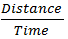
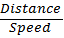

Speed The rate at which an object is moving is known as its speed. It is the distance traveled per unit time e.g. an object moving at 20 m/s shows that the object covers a distance of 20 meters every second.
Speed =
Thus, Time =

Thus, Distance = Speed * Time
A man covers a certain distance D1 km at a speed of S1 km/hr and, D2 km at a speed of S2 km/hr, his average speed during the whole journey is given by
Average speed =s1*s2(D1+D2)/s1*D2+s2*D1
A man travels from P to Q at a speed of S1 km/hr and returns from Q to P at S2 km/hr, his average speed during the whole journey is given by:
Average speed = 2S1S2/S1+S2
Sample Questions
A running man crosses a bridge of length 500 meters in 4 minutes. At what speed he is running?
8.5 km/hr
7.5 km/hr
6.5 km/hr
9.5 km/hr
A man covers a distance of 110 km between two cities in 10 hours. He travelled partly on foot at 9 km/hr and partly on a bicycle at 15 km/hr. Find the distance travelled on foot.